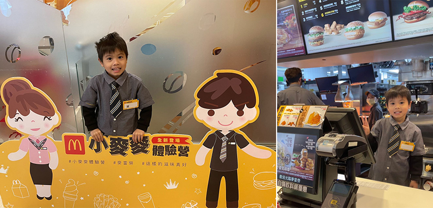
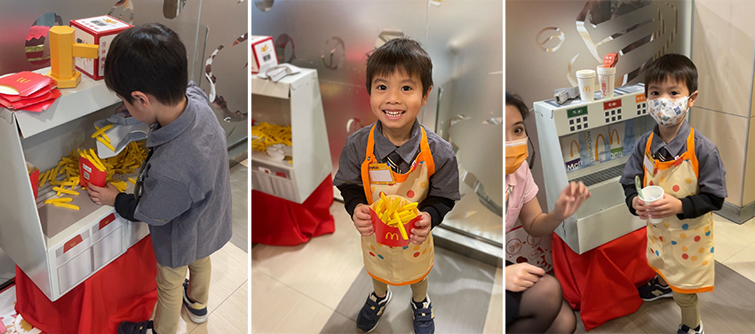
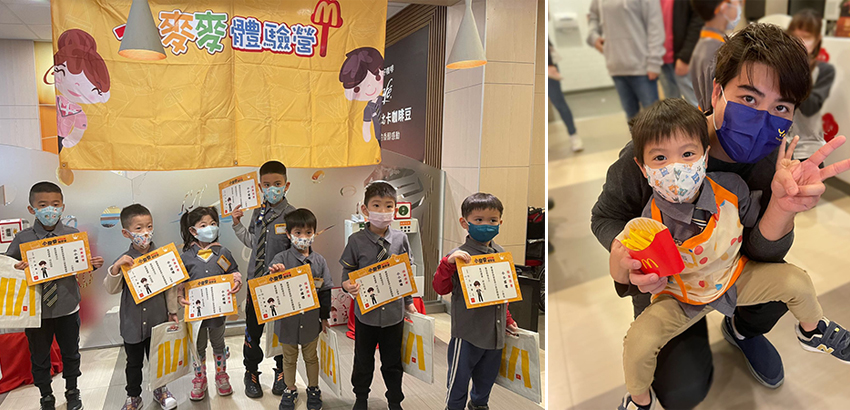

由於疫情關係而停辦了兩年，睽違以久的麥當勞兒童體驗營，終於再度強勢回歸，每次活動都受到小孩與爸媽的喜愛，是非常搶手的親子活動，每場次的名額都只有幾位幸運兒能參加，所以造成一開放報名就會秒殺的情況，而這次終於幫兒子報名到了2023冬季一月的場次，活動分為兩種，有「小小經理」與「小小款待大使」，主要差別在於「小小經理」是穿上經理服裝，學習幫客人點餐和備餐，而「小小款待大使」是穿著粉色制服，主要負責接待客人的職位，而本次幫兒子報名的是「小小經理人」，到底麥當勞的神秘廚房是如何幫顧客點餐與備餐呢？這次就藉由兒子的視角來解謎。
到了活動的當天，抵達會場後，已經有很多小朋友們著裝完成，並且精神抖擻的準備好要上工了，而兒子也從工作人員準備好的相關物品，拿出衣服後神速換裝完成，工作人員還貼心的準備好每個小朋友的名牌，乾淨的衣裝、整齊的領帶、閃亮的名牌，看起來就是一個專業的麥當勞經理，而縮小版的經理們搭配著認真的目光，顯得格外可愛。一切準備就緒後，每個小小經理就打卡開始上班，打卡後，活動人員帶著大家到了麥當勞的店門口呼出了精神口號「歡迎光臨麥當勞」，之後來到活動道具前，準備來製作美味的餐點，來提供客人需求，而活動人員這時教導各位小小經理最重要的事情，身為服務人員，最重要的就是衛生習慣和保持食品安全，所以要先將小手洗乾淨，活動人員藉由帶動唱與小小經理們跳洗手歌，透過輕鬆玩樂的方式教導小朋友正確的洗手觀念，而且很快記住洗手五步驟。
|  |
接著小朋友換上圍裙，準備開始製作餐點，來到薯條模擬工作站，活動人員細心的教導小朋友，首先需要把薯條平均的撒鹽，接著從底下鏟薯條裝進盒子，兒子一開始還無法把薯條盒裝滿，練習幾次後動作越來越流利。下一站則來到飲料模擬工作站，小朋友可以自行動手操作，拿杯子裝冰塊，再擲骰子決定要裝什麼飲料，模擬體驗相當逼真也非常有趣，兒子在這兩站中來回玩了好幾次。最後小朋友可以實際到麥當勞的點餐櫃檯幫充當顧客的父母點餐並結帳，讓小朋友在服務員的協助下，真實的操作機器，兒子站上去後很興奮且很有架式，也順利的完成點餐的任務。活動到了尾聲，每個小朋友都會領到一張證書和小禮物，這也是今天工作的薪水，兒子拿到後好開心且獲得成就感，也迫不及待得享用附贈的餐點。
|  |
這次活動時間約一個半小時，充實的內容且具有教育意義的學習，兒子玩得不亦樂乎，對於每項體驗都覺得很新鮮，費用雖然稍微昂貴，但可以滿足小朋友角色扮演且在活動中親自體驗職場工作的辛苦與辛苦後的收穫，2023年6月1號，可以報名7月夏季場次的體驗營，大家不妨帶著自己的小寶貝來參與，讓寶貝們能在活動中親身體驗並學習。
|  |